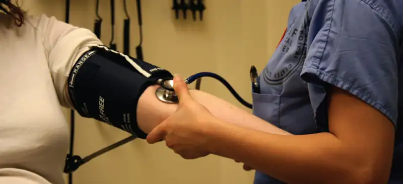
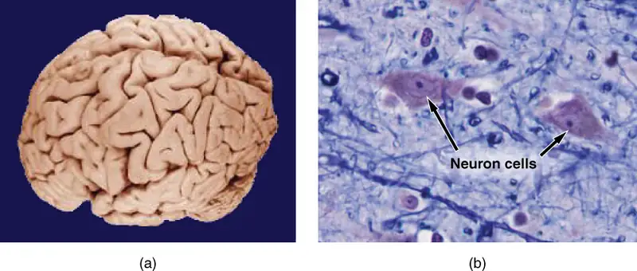
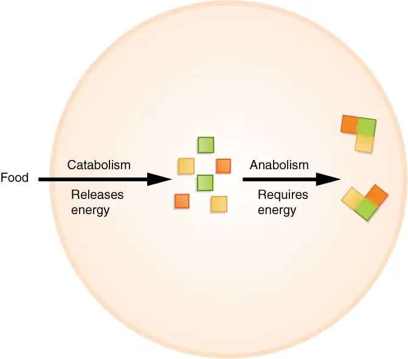
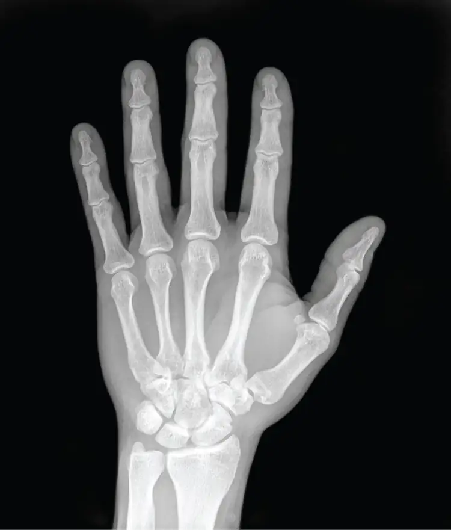

Chapter 1: An Introduction to the Human Body¶
Introduction¶

Chapter Outline: Chapter Objectives
After studying this chapter, you will be able to:
- Distinguish between anatomy and physiology, and identify several branches of each
- Describe the structure of the body, from simplest to most complex, in terms of the six levels of organization
- Identify the functional characteristics of human life
- Identify the four requirements for human survival
- Define homeostasis and explain its importance to normal human functioning
- Use appropriate anatomical terminology to identify key body structures, body regions, and directions in the body
- Compare and contrast at least four medical imaging techniques in terms of their function and use in medicine
Though you may approach a course in anatomy and physiology strictly as a requirement for your field of study, the knowledge you gain in this course will serve you well in many aspects of your life. An understanding of anatomy and physiology is not only fundamental to any career in the health professions, but it can also benefit your own health. Familiarity with the human body can help you make healthful choices and prompt you to take appropriate action when signs of illness arise. Your knowledge in this field will help you understand news about nutrition, medications, medical devices, and procedures and help you understand genetic or infectious diseases. At some point, everyone will have a problem with some aspect of their body and your knowledge can help you to be a better parent, spouse, partner, friend, colleague, or caregiver.
This chapter begins with an overview of anatomy and physiology and a preview of the body regions and functions. It then covers the characteristics of life and how the body works to maintain stable conditions. It introduces a set of standard terms for body structures and for planes and positions in the body that will serve as a foundation for more comprehensive information covered later in the text. It ends with examples of medical imaging used to see inside the living body.
1.1 Overview of Anatomy and Physiology¶
Learning Objectives
By the end of this section, you will be able to:
- Compare and contrast anatomy and physiology, including their specializations and methods of study
- Discuss the fundamental relationship between anatomy and physiology
Human anatomy is the scientific study of the body’s structures. Some of these structures are very small and can only be observed and analyzed with the assistance of a microscope. Other larger structures can readily be seen, manipulated, measured, and weighed. The word “anatomy” comes from a Greek root that means “to cut apart.” Human anatomy was first studied by observing the exterior of the body and observing the wounds of soldiers and other injuries. Later, physicians were allowed to dissect bodies of the dead to augment their knowledge. When a body is dissected, its structures are cut apart in order to observe their physical attributes and their relationships to one another. Dissection is still used in medical schools, anatomy courses, and in pathology labs. In order to observe structures in living people, however, a number of imaging techniques have been developed. These techniques allow clinicians to visualize structures inside the living body such as a cancerous tumor or a fractured bone.
Like most scientific disciplines, anatomy has areas of specialization. Gross anatomy is the study of the larger structures of the body, those visible without the aid of magnification (Figure 1.2 a). Macro- means “large,” thus, gross anatomy is also referred to as macroscopic anatomy. In contrast, micro- means “small,” and microscopic anatomy is the study of structures that can be observed only with the use of a microscope or other magnification devices (Figure 1.2 b). Microscopic anatomy includes cytology, the study of cells and histology, the study of tissues. As the technology of microscopes has advanced, anatomists have been able to observe smaller and smaller structures of the body, from slices of large structures like the heart, to the three-dimensional structures of large molecules in the body.

Anatomists take two general approaches to the study of the body’s structures: regional and systemic. Regional anatomy is the study of the interrelationships of all of the structures in a specific body region, such as the abdomen. Studying regional anatomy helps us appreciate the interrelationships of body structures, such as how muscles, nerves, blood vessels, and other structures work together to serve a particular body region. In contrast, systemic anatomy is the study of the structures that make up a discrete body system—that is, a group of structures that work together to perform a unique body function. For example, a systemic anatomical study of the muscular system would consider all of the skeletal muscles of the body.
Whereas anatomy is about structure, physiology is about function. Human physiology is the scientific study of the chemistry and physics of the structures of the body and the ways in which they work together to support the functions of life. Much of the study of physiology centers on the body’s tendency toward homeostasis. Homeostasis is the state of steady internal conditions maintained by living things. The study of physiology certainly includes observation, both with the naked eye and with microscopes, as well as manipulations and measurements. However, current advances in physiology usually depend on carefully designed laboratory experiments that reveal the functions of the many structures and chemical compounds that make up the human body.
Like anatomists, physiologists typically specialize in a particular branch of physiology. For example, neurophysiology is the study of the brain, spinal cord, and nerves and how these work together to perform functions as complex and diverse as vision, movement, and thinking. Physiologists may work from the organ level (exploring, for example, what different parts of the brain do) to the molecular level (such as exploring how an electrochemical signal travels along nerves).
Form is closely related to function in all living things. For example, the thin flap of your eyelid can snap down to clear away dust particles and almost instantaneously slide back up to allow you to see again. At the microscopic level, the arrangement and function of the nerves and muscles that serve the eyelid allow for its quick action and retreat. At a smaller level of analysis, the function of these nerves and muscles likewise relies on the interactions of specific molecules and ions. Even the three-dimensional structure of certain molecules is essential to their function.
Your study of anatomy and physiology will make more sense if you continually relate the form of the structures you are studying to their function. In fact, it can be somewhat frustrating to attempt to study anatomy without an understanding of the physiology that a body structure supports. Imagine, for example, trying to appreciate the unique arrangement of the bones of the human hand if you had no conception of the function of the hand. Fortunately, your understanding of how the human hand manipulates tools—from pens to cell phones—helps you appreciate the unique alignment of the thumb in opposition to the four fingers, making your hand a structure that allows you to pinch and grasp objects and type text messages.
1.2 Structural Organization of the Human Body¶
Learning Objectives
By the end of this section, you will be able to:
- Describe the structure of the human body in terms of six levels of organization
- List the eleven organ systems of the human body and identify at least one organ and one major function of each
Before you begin to study the different structures and functions of the human body, it is helpful to consider its basic architecture; that is, how its smallest parts are assembled into larger structures. It is convenient to consider the structures of the body in terms of fundamental levels of organization that increase in complexity: subatomic particles, atoms, molecules, organelles, cells, tissues, organs, organ systems, organisms and biosphere (Figure 1.3).
![This illustration shows biological organization as a pyramid. The chemical level is at the apex of the pyramid where atoms bond to form molecules with three dimensional structures. An example is shown with two white hydrogen atoms bonding to a red oxygen atom to create water. The next level down on the pyramid is the cellular level, as illustrated with a long, tapered, smooth muscle cell. At this level, a variety of molecules combine to form the interior fluid and organelles of a body cell. The next level down is the tissue level. A community of similar cells forms body tissue. The example given here is a section of smooth muscle tissue, which contains many smooth muscle cells closely bound side by side. The next level down is the organ level, as illustrated with the bladder and urethra. The bladder contains smooth muscle while the urethra contains skeletal muscle. These are both examples of muscle tissues. The next level down is the organ system level, as illustrated by the entire urinary system containing the kidney, ureters, bladder and urethra. At this level, two or more organs work closely together to perform the functions of a body system. At the base of the pyramid is the organismal level illustrated with a woman drinking water. At this level, many organ systems work harmoniously together to perform the functions of an independent organism.](img/101-levels-of-org-in-body.webp)
The Levels of Organization¶
To study the chemical level of organization, scientists consider the simplest building blocks of matter: subatomic particles, atoms and molecules. All matter in the universe is composed of one or more unique pure substances called elements, familiar examples of which are hydrogen, oxygen, carbon, nitrogen, calcium, and iron. The smallest unit of any of these pure substances (elements) is an atom. Atoms are made up of subatomic particles such as the proton, electron and neutron. Two or more atoms combine to form a molecule, such as the water molecules, proteins, and sugars found in living things. Molecules are the chemical building blocks of all body structures.
A cell is the smallest independently functioning unit of a living organism. Even bacteria, which are extremely small, independently-living organisms, have a cellular structure. Each bacterium is a single cell. All living structures of human anatomy contain cells, and almost all functions of human physiology are performed in cells or are initiated by cells.
A human cell typically consists of flexible membranes that enclose cytoplasm, a water-based cellular fluid together with a variety of tiny functioning units called organelles. In humans, as in all organisms, cells perform all functions of life. A tissue is a group of many similar cells (though sometimes composed of a few related types) that work together to perform a specific function. An organ is an anatomically distinct structure of the body composed of two or more tissue types. Each organ performs one or more specific physiological functions. An organ system is a group of organs that work together to perform major functions or meet physiological needs of the body.
This book covers eleven distinct organ systems in the human body (Figure 1.4 and Figure 1.5). Assigning organs to organ systems can be imprecise since organs that “belong” to one system can also have functions integral to another system. In fact, most organs contribute to more than one system.
In this book and throughout your studies of biological sciences, you will often read descriptions related to similarities and differences among biological structures, processes, and health related to a person's biological sex. People often use the words "female" and "male" to describe two different concepts: our sense of gender identity, and our biological sex as determined by our chromosomes, hormones, organs, and other physical characteristics. For some people, gender identity is different from biological sex or their sex assigned at birth. Throughout this book, "female" and "male" refer to sex only, and the typical anatomy and physiology of XX and XY individuals is discussed.
![This illustration shows eight silhouettes of a human female, each showing the components of a different organ system. The integumentary system encloses internal body structures and is the site of many sensory receptors. The integumentary system includes the hair, skin, and nails. The skeletal system supports the body and, along with the muscular system, enables movement. The skeletal system includes cartilage, such as that at the tip of the nose, as well as the bones and joints. The muscular system enables movement, along with the skeletal system, but also helps to maintain body temperature. The muscular system includes skeletal muscles, as well as tendons that connect skeletal muscles to bones. The nervous system detects and processes sensory information and activates bodily responses. The nervous system includes the brain, spinal cord, and peripheral nerves, such as those located in the limbs. The endocrine system secretes hormones and regulates bodily processes. The endocrine system includes the pituitary gland in the brain, the thyroid gland in the throat, the pancreas in the abdomen, the adrenal glands on top of the kidneys, and the testes in the scrotum of males as well as the ovaries in the pelvic region of females. The cardiovascular system delivers oxygen and nutrients to the tissues as well as equalizes temperature in the body. The cardiovascular system includes the heart and blood vessels.](img/102-organ-systems-of-body-page1.webp)
![The lymphatic system returns fluid to the blood and defends against pathogens. The lymphatic system includes the thymus in the chest, the spleen in the abdomen, the lymphatic vessels that spread throughout the body, and the lymph nodes distributed along the lymphatic vessels. The respiratory system removes carbon dioxide from the body and delivers oxygen to the blood. The respiratory system includes the nasal passages, the trachea, and the lungs. The digestive system processes food for use by the body and removes wastes from undigested food. The digestive system includes the stomach, the liver, the gall bladder (connected to the liver), the large intestine, and the small intestine. The urinary system controls water balance in the body and removes and excretes waste from the blood. The urinary system includes the kidneys and the urinary bladder. The reproductive system of males and females produce sex hormones and gametes. The male reproductive system is specialized to deliver gametes to the female while the female reproductive system is specialized to support the embryo and fetus until birth and produce milk for the infant after birth. The male reproductive system includes the two testes within the scrotum as well as the epididymis which wraps around each testis. The female reproductive system includes the mammary glands within the breasts and the ovaries and uterus within the pelvic cavity.](img/102-organ-systems-of-body-page2.webp)
The organism level is the highest level of organization. An organism is a living being that has a cellular structure and that can independently perform all physiologic functions necessary for life. In multicellular organisms, including humans, all cells, tissues, organs, and organ systems of the body work together to maintain the life and health of the organism.
1.3 Functions of Human Life¶
Learning Objectives
By the end of this section, you will be able to:
- Explain the importance of organization to the function of the human organism
- Distinguish between metabolism, anabolism, and catabolism
- Provide at least two examples of human responsiveness and human movement
- Compare and contrast growth, differentiation, and reproduction
The different organ systems each have different functions and therefore unique roles to perform in physiology. These many functions can be summarized in terms of a few that we might consider definitive of human life: organization, metabolism, responsiveness, movement, development, and reproduction.
Organization¶
A human body consists of trillions of cells organized in a way that maintains distinct internal compartments. These compartments keep body cells separated from external environmental threats and keep the cells moist and nourished. They also separate internal body fluids from the countless microorganisms that grow on body surfaces, including the lining of certain passageways that connect to the outer surface of the body. The intestinal tract, for example, is home to more bacterial cells than the total of all human cells in the body, yet these bacteria are outside the body and cannot be allowed to circulate freely inside the body.
Cells, for example, have a cell membrane (also referred to as the plasma membrane) that keeps the intracellular environment—the fluids and organelles—separate from the extracellular environment. Blood vessels keep blood inside a closed circulatory system, and nerves and muscles are wrapped in connective tissue sheaths that separate them from surrounding structures. In the chest and abdomen, a variety of internal membranes keep major organs such as the lungs, heart, and kidneys separate from others.
The body’s largest organ system is the integumentary system, which includes the skin and its associated structures, such as hair and nails. The surface tissue of skin is a barrier that protects internal structures and fluids from potentially harmful microorganisms and other toxins.
Metabolism¶
The first law of thermodynamics holds that energy can neither be created nor destroyed—it can only change form. Your basic function as an organism is to consume (ingest) energy and molecules in the foods you eat, convert some of it into fuel for movement, sustain your body functions, and build and maintain your body structures. There are two types of reactions that accomplish this: anabolism and catabolism.
- Anabolism is the process whereby smaller, simpler molecules are combined into larger, more complex substances. Your body can assemble, by utilizing energy, the complex chemicals it needs by combining small molecules derived from the foods you eat
- Catabolism is the process by which larger more complex substances are broken down into smaller simpler molecules. Catabolism releases energy. The complex molecules found in foods are broken down so the body can use their parts to assemble the structures and substances needed for life.
Taken together, these two processes are called metabolism. Metabolism is the sum of all anabolic and catabolic reactions that take place in the body (Figure 1.6). Both anabolism and catabolism occur simultaneously and continuously to keep you alive.

Every cell in your body makes use of a chemical compound, adenosine triphosphate (ATP), to store and release energy. The cell stores energy in the synthesis (anabolism) of ATP, then moves the ATP molecules to the location where energy is needed to fuel cellular activities. Then the ATP is broken down (catabolism) and a controlled amount of energy is released, which is used by the cell to perform a particular job.
Interactive
View this video to learn more about metabolic processes. Which organs of the body likely carry out anabolic processes? What about catabolic processes?
Responsiveness¶
Responsiveness is the ability of an organism to adjust to changes in its internal and external environments. An example of responsiveness to external stimuli could include moving toward sources of food and water and away from perceived dangers. Changes in an organism’s internal environment, such as increased body temperature, can cause the responses of sweating and the dilation of blood vessels in the skin in order to decrease body temperature, as shown by the runners in Figure 1.7.
Movement¶
Human movement includes not only actions at the joints of the body, but also the motion of individual organs and even individual cells. As you read these words, red and white blood cells are moving throughout your body, muscle cells are contracting and relaxing to maintain your posture and to focus your vision, and glands are secreting chemicals to regulate body functions. Your body is coordinating the action of entire muscle groups to enable you to move air into and out of your lungs, to push blood throughout your body, and to propel the food you have eaten through your digestive tract. Consciously, of course, you contract your skeletal muscles to move the bones of your skeleton to get from one place to another (as the runners are doing in Figure 1.7), and to carry out all of the activities of your daily life.
Development, growth and reproduction¶
Development is all of the changes the body goes through in life. Development includes the process of differentiation, in which unspecialized cells become specialized in structure and function to perform certain tasks in the body. Development also includes the processes of growth and repair, both of which involve cell differentiation.
Growth is the increase in body size. Humans, like all multicellular organisms, grow by increasing the number of existing cells, increasing the amount of non-cellular material around cells (such as mineral deposits in bone), and, within very narrow limits, increasing the size of existing cells.
Reproduction is the formation of a new organism from parent organisms. In humans, reproduction is carried out by the male and female reproductive systems. Because death will come to all complex organisms, without reproduction, the line of organisms would end.
1.4 Requirements for Human Life¶
Learning Objectives
By the end of this section, you will be able to:
- Discuss the role of oxygen and nutrients in maintaining human survival
- Explain why extreme heat and extreme cold threaten human survival
- Explain how the pressure exerted by gases and fluids influences human survival
Humans have been acclimating to life on Earth for at least the past 200,000 years. Earth and its atmosphere have provided us with air to breathe, water to drink, and food to eat, but these are not the only requirements for survival. Although you may rarely think about it, you also cannot live outside of a certain range of temperature and pressure that the surface of our planet and its atmosphere provides. The next sections explore these four requirements of life.
Oxygen¶
Atmospheric air is only about 20 percent oxygen, but that oxygen is a key component of the chemical reactions that keep the body alive, including the reactions that produce ATP. Brain cells are especially sensitive to lack of oxygen because of their requirement for a high-and-steady production of ATP. Brain damage is likely within five minutes without oxygen, and death is likely within ten minutes.
Nutrients¶
A nutrient is a substance in foods and beverages that is essential to human survival. The three basic classes of nutrients are water, the energy-yielding and body-building nutrients, and the micronutrients (vitamins and minerals).
The most critical nutrient is water. Depending on the environmental temperature and our state of health, we may be able to survive for only a few days without water. The body’s functional chemicals are dissolved and transported in water, and the chemical reactions of life take place in water. Moreover, water is the largest component of cells, blood, and the fluid between cells, and water makes up about 70 percent of an adult’s body mass. Water also helps regulate our internal temperature and cushions, protects, and lubricates joints and many other body structures.
The energy-yielding nutrients are primarily carbohydrates and lipids, while proteins mainly supply the amino acids that are the building blocks of the body itself. You ingest these in plant and animal foods and beverages, and the digestive system breaks them down into molecules small enough to be absorbed. The breakdown products of carbohydrates and lipids can then be used in the metabolic processes that convert them to ATP. Although you might feel as if you are starving after missing a single meal, you can survive without consuming the energy-yielding nutrients for at least several weeks.
Water and the energy-yielding nutrients are also referred to as macronutrients because the body needs them in large amounts. In contrast, micronutrients are vitamins and minerals. These elements and compounds participate in many essential chemical reactions and processes, such as nerve impulses, and some, such as calcium, also contribute to the body’s structure. Your body can store some of the micronutrients in its tissues, and draw on those reserves if you fail to consume them in your diet for a few days or weeks. Some other micronutrients, such as vitamin C and most of the B vitamins, are water-soluble and cannot be stored, so you need to consume them every day or two.
Narrow Range of Temperature¶
You have probably seen news stories about athletes who died of heat stroke, or hikers who died of exposure to cold. Such deaths occur because the chemical reactions upon which the body depends can only take place within a narrow range of body temperature, from just below to just above 37°C (98.6°F). When body temperature rises well above or drops well below normal, certain proteins (enzymes) that facilitate chemical reactions lose their normal structure and their ability to function and the chemical reactions of metabolism cannot proceed.
That said, the body can respond effectively to short-term exposure to heat (Figure 1.8) or cold. One of the body’s responses to heat is, of course, sweating. As sweat evaporates from skin, it removes some thermal energy from the body, cooling it. Adequate water (from the extracellular fluid in the body) is necessary to produce sweat, so adequate fluid intake is essential to balance that loss during the sweat response. Not surprisingly, the sweat response is much less effective in a humid environment because the air is already saturated with water. Thus, the sweat on the skin’s surface is not able to evaporate, and internal body temperature can get dangerously high.
The body can also respond effectively to short-term exposure to cold. One response to cold is shivering, which is random muscle movement that generates heat. Another response is increased breakdown of stored energy to generate heat. When that energy reserve is depleted, however, and the core temperature begins to drop significantly, red blood cells will lose their ability to give up oxygen, denying the brain of this critical component of ATP production. This lack of oxygen can cause confusion, lethargy, and eventually loss of consciousness and death. The body responds to cold by reducing blood circulation to the extremities, the hands and feet, in order to prevent blood from cooling there and so that the body’s core can stay warm. Even when core body temperature remains stable, however, tissues exposed to severe cold, especially the fingers and toes, can develop frostbite when blood flow to the extremities has been much reduced. This form of tissue damage can be permanent and lead to gangrene, requiring amputation of the affected region.
Everyday Connection: Controlled Hypothermia
As you have learned, the body continuously engages in coordinated physiological processes to maintain a stable temperature. In some cases, however, overriding this system can be useful, or even life-saving. Hypothermia is the clinical term for an abnormally low body temperature (hypo- = “below” or “under”). Controlled hypothermia is clinically induced hypothermia performed in order to reduce the metabolic rate of an organ or of a person’s entire body.
Controlled hypothermia often is used, for example, during open-heart surgery because it decreases the metabolic needs of the brain, heart, and other organs, reducing the risk of damage to them. When controlled hypothermia is used clinically, the patient is given medication to prevent shivering. The body is then cooled to 25–32°C (79–89°F). The heart is stopped and an external heart-lung pump maintains circulation to the patient’s body. The heart is cooled further and is maintained at a temperature below 15°C (60°F) for the duration of the surgery. This very cold temperature helps the heart muscle to tolerate its lack of blood supply during the surgery.
Some emergency department physicians use controlled hypothermia to reduce damage to the heart in patients who have suffered a cardiac arrest. In the emergency department, the physician induces coma and lowers the patient’s body temperature to approximately 91 degrees. This condition, which is maintained for 24 hours, slows the patient’s metabolic rate. Because the patient’s organs require less blood to function, the heart’s workload is reduced.
Narrow Range of Atmospheric Pressure¶
Pressure is a force exerted by a substance that is in contact with another substance. Atmospheric pressure is pressure exerted by the mixture of gases (primarily nitrogen and oxygen) in the Earth’s atmosphere. Although you may not perceive it, atmospheric pressure is constantly pressing down on your body. This pressure keeps gases within your body, such as the gaseous nitrogen in body fluids, dissolved. If you were suddenly ejected from a space ship above Earth’s atmosphere, you would go from a situation of normal pressure to one of very low pressure. The pressure of the nitrogen gas in your blood would be much higher than the pressure of nitrogen in the space surrounding your body. As a result, the nitrogen gas in your blood would expand, forming bubbles that could block blood vessels and even cause cells to break apart.
Atmospheric pressure does more than just keep blood gases dissolved. Your ability to breathe—that is, to take in oxygen and release carbon dioxide—also depends upon a precise atmospheric pressure. Altitude sickness occurs in part because the atmosphere at high altitudes exerts less pressure, reducing the exchange of these gases, and causing shortness of breath, confusion, headache, lethargy, and nausea. Mountain climbers carry oxygen to reduce the effects of both low oxygen levels and low barometric pressure at higher altitudes (Figure 1.9).
Homeostatic Imbalances: Decompression Sickness
Decompression sickness (DCS) is a condition in which gases dissolved in the blood or in other body tissues are no longer dissolved following a reduction in pressure on the body. This condition affects underwater divers who surface from a deep dive too quickly, and it can affect pilots flying at high altitudes in planes with unpressurized cabins. Divers often call this condition “the bends,” a reference to joint pain that is a symptom of DCS.
In all cases, DCS is brought about by a reduction in barometric pressure. At high altitude, barometric pressure is much less than on Earth’s surface because pressure is produced by the weight of the column of air above the body pressing down on the body. The very great pressures on divers in deep water are likewise from the weight of a column of water pressing down on the body. For divers, DCS occurs at normal barometric pressure (at sea level), but it is brought on by the relatively rapid decrease of pressure as divers rise from the high pressure conditions of deep water to the now low, by comparison, pressure at sea level. Not surprisingly, diving in deep mountain lakes, where barometric pressure at the surface of the lake is less than that at sea level is more likely to result in DCS than diving in water at sea level.
In DCS, gases dissolved in the blood (primarily nitrogen) come rapidly out of solution, forming bubbles in the blood and in other body tissues. This occurs because when pressure of a gas over a liquid is decreased, the amount of gas that can remain dissolved in the liquid also is decreased. It is air pressure that keeps your normal blood gases dissolved in the blood. When pressure is reduced, less gas remains dissolved. You have seen this in effect when you open a carbonated drink. Removing the seal of the bottle reduces the pressure of the gas over the liquid. This in turn causes bubbles as dissolved gases (in this case, carbon dioxide) come out of solution in the liquid.
The most common symptoms of DCS are pain in the joints, with headache and disturbances of vision occurring in 10 percent to 15 percent of cases. Left untreated, very severe DCS can result in death. Immediate treatment is with pure oxygen. The affected person is then moved into a hyperbaric chamber. A hyperbaric chamber is a reinforced, closed chamber that is pressurized to greater than atmospheric pressure. It treats DCS by repressurizing the body so that pressure can then be removed much more gradually. Because the hyperbaric chamber introduces oxygen to the body at high pressure, it increases the concentration of oxygen in the blood. This has the effect of replacing some of the nitrogen in the blood with oxygen, which is easier to tolerate out of solution.
The dynamic pressure of body fluids is also important to human survival. For example, blood pressure, which is the pressure exerted by blood as it flows within blood vessels, must be great enough to enable blood to reach all body tissues, and yet low enough to ensure that the delicate blood vessels can withstand the friction and force of the pulsating flow of pressurized blood.
1.5 Homeostasis¶
Learning Objectives
By the end of this section, you will be able to:
- Discuss the role of homeostasis in healthy functioning
- Contrast negative and positive feedback, giving one physiologic example of each mechanism
Maintaining homeostasis requires that the body continuously monitor its internal conditions. From body temperature to blood pressure to levels of certain nutrients, each physiological condition has a particular set point. A set point is the physiological value around which the normal range fluctuates. A normal range is the restricted set of values that is optimally healthful and stable. For example, the set point for normal human body temperature is approximately 37°C (98.6°F) Physiological parameters, such as body temperature and blood pressure, tend to fluctuate within a normal range a few degrees above and below that point. Control centers in the brain and other parts of the body monitor and react to deviations from homeostasis using negative feedback. Negative feedback is a mechanism that reverses a deviation from the set point. Therefore, negative feedback maintains body parameters within their normal range. The maintenance of homeostasis by negative feedback goes on throughout the body at all times, and an understanding of negative feedback is thus fundamental to an understanding of human physiology.
Negative Feedback¶
A negative feedback system has three basic components (Figure 1.10a). A sensor, also referred to a receptor, is a component of a feedback system that monitors a physiological value. This value is reported to the control center. The control center is the component in a feedback system that compares the value to the normal range. If the value deviates too much from the set point, then the control center activates an effector. An effector is the component in a feedback system that causes a change to reverse the situation and return the value to the normal range.
![This figure shows two flow charts labeled A and B. Chart A shows a general negative feedback loop. The loop starts with a stimulus. Information about the stimulus is perceived by a sensor which sends that information to a control center. The control center sends a signal to an effector, which creates a response. That then feeds back to the top of the flow chart by inhibiting the stimulus. Part B shows body temperature regulation as an example of negative feedback system. Here, the stimulus is body temperature exceeding 37 degrees Celsius. The sensor is a set of nerve cells in the skin and brain and the control center is the temperature regulatory center of the brain. The effectors are sweat glands throughout the body which lead to increased heat loss and inhibit the rising body temperature.](img/105-negative-feedback-loops.webp)
In order to set the system in motion, a stimulus must drive a physiological parameter beyond its normal range (that is, beyond homeostasis). This stimulus is “heard” by a specific sensor. For example, in the control of blood glucose, specific endocrine cells in the pancreas detect excess glucose (the stimulus) in the bloodstream. These pancreatic beta cells respond to the increased level of blood glucose by releasing the hormone insulin into the bloodstream. The insulin signals skeletal muscle fibers, fat cells (adipocytes), and liver cells to take up the excess glucose, removing it from the bloodstream. As glucose concentration in the bloodstream drops, the decrease in concentration—the actual negative feedback—is detected by pancreatic alpha cells, and insulin release stops. This prevents blood sugar levels from continuing to drop below the normal range.
Humans have a similar temperature regulation feedback system that works by promoting either heat loss or heat gain (Figure 1.10b). When the brain’s temperature regulation center receives data from the sensors indicating that the body’s temperature exceeds its normal range, it stimulates a cluster of brain cells referred to as the “heat-loss center.” This stimulation has three major effects:
- Blood vessels in the skin begin to dilate allowing more blood from the body core to flow to the surface of the skin allowing the heat to radiate into the environment.
- As blood flow to the skin increases, sweat glands are activated to increase their output. As the sweat evaporates from the skin surface into the surrounding air, it takes heat with it.
- The depth of respiration increases, and a person may breathe through an open mouth instead of through the nasal passageways. This further increases heat loss from the lungs.
In contrast, activation of the brain’s heat-gain center by exposure to cold reduces blood flow to the skin, and blood returning from the limbs is diverted into a network of deep veins. This arrangement traps heat closer to the body core and restricts heat loss. If heat loss is severe, the brain triggers an increase in random signals to skeletal muscles, causing them to contract and producing shivering. The muscle contractions of shivering release heat while using up ATP. The brain triggers the thyroid gland in the endocrine system to release thyroid hormone, which increases metabolic activity and heat production in cells throughout the body. The brain also signals the adrenal glands to release epinephrine (adrenaline), a hormone that causes the breakdown of glycogen into glucose, which can be used as an energy source. The breakdown of glycogen into glucose also results in increased metabolism and heat production.
Interactive
Water concentration in the body is critical for proper functioning. A person’s body retains very tight control on water levels without conscious control by the person. Watch this video to learn more about water concentration in the body. Which organ has primary control over the amount of water in the body?
Positive Feedback¶
Positive feedback intensifies a change in the body’s physiological condition rather than reversing it. A deviation from the normal range results in more change, and the system moves farther away from the normal range. Positive feedback in the body is normal only when there is a definite end point. Childbirth and the body’s response to blood loss are two examples of positive feedback loops that are normal but are activated only when needed.
Childbirth at full term is an example of a situation in which the maintenance of the existing body state is not desired. Enormous changes in a person’s body are required to expel the baby at the end of pregnancy. And the events of childbirth, once begun, must progress rapidly to a conclusion or the life of a person giving birth and the baby are at risk. The extreme muscular work of labor and delivery are the result of a positive feedback system (Figure 1.11).
![This diagram shows the steps of a positive feedback loop as a series of stepwise arrows looping around a diagram of an infant within the uterus of a pregnant woman. Initially the head of the baby pushes against the cervix, transmitting nerve impulses from the cervix to the brain. Next the brain stimulates the pituitary gland to secrete oxytocin which is carried in the bloodstream to the uterus. Finally, the oxytocin simulates uterine contractions and pushes the baby harder into the cervix. As the head of the baby pushes against the cervix with greater and greater force, the uterine contractions grow stronger and more frequent. This mechanism is a positive feedback loop.](img/106-pregnancy-positive-feedback.webp)
The first contractions of labor (the stimulus) push the baby toward the cervix (the lowest part of the uterus). The cervix contains stretch-sensitive nerve cells that monitor the degree of stretching (the sensors). These nerve cells send messages to the brain, which in turn causes the pituitary gland at the base of the brain to release the hormone oxytocin into the bloodstream. Oxytocin causes stronger contractions of the smooth muscles in the uterus (the effectors), pushing the baby further down the birth canal. This causes even greater stretching of the cervix. The cycle of stretching, oxytocin release, and increasingly more forceful contractions stops only when the baby is born. At this point, the stretching of the cervix halts, stopping the release of oxytocin.
A second example of positive feedback centers on reversing extreme damage to the body. Following a penetrating wound, the most immediate threat is excessive blood loss. Less blood circulating means reduced blood pressure and reduced perfusion (penetration of blood) to the brain and other vital organs. If perfusion is severely reduced, vital organs will shut down and the person will die. The body responds to this potential catastrophe by releasing substances in the injured blood vessel wall that begin the process of blood clotting. As each step of clotting occurs, it stimulates the release of more clotting substances. This accelerates the processes of clotting and sealing off the damaged area. Clotting is contained in a local area based on the tightly controlled availability of clotting proteins. This is an adaptive, life-saving cascade of events.
1.6 Anatomical Terminology¶
Learning Objectives
By the end of this section, you will be able to:
- Demonstrate the anatomical position
- Describe the human body using directional and regional terms
- Identify three planes most commonly used in the study of anatomy
- Distinguish between the posterior (dorsal) and the anterior (ventral) body cavities, identifying their subdivisions and representative organs found in each
- Describe serous membrane and explain its function
Anatomists and health care providers use terminology that can be bewildering to the uninitiated. However, the purpose of this language is not to confuse, but rather to increase precision and reduce medical errors. For example, is a scar “above the wrist” located on the forearm two or three inches away from the hand? Or is it at the base of the hand? Is it on the palm-side or back-side? By using precise anatomical terminology, we eliminate ambiguity. Anatomical terms derive from ancient Greek and Latin words. Because these languages are no longer used in everyday conversation, the meaning of their words does not change.
Anatomical terms are made up of roots, prefixes, and suffixes. The root of a term often refers to an organ, tissue, or condition, whereas the prefix or suffix often describes the root. For example, in the disorder hypertension, the prefix “hyper-” means “high” or “over,” and the root word “tension” refers to pressure, so the word “hypertension” refers to abnormally high blood pressure.
Anatomical Position¶
To further increase precision, anatomists standardize the way in which they view the body. Just as maps are normally oriented with north at the top, the standard body “map,” or anatomical position, is that of the body standing upright, with the feet at shoulder width and parallel, toes forward. The upper limbs are held out to each side, and the palms of the hands face forward as illustrated in Figure 1.12. Using this standard position reduces confusion. It does not matter how the body being described is oriented, the terms are used as if it is in anatomical position. For example, a scar in the “anterior (front) carpal (wrist) region” would be present on the palm side of the wrist. The term “anterior” would be used even if the hand were palm down on a table.
![This illustration shows an anterior and posterior view of the human body. The cranial region encompasses the upper part of the head while the facial region encompasses the lower half of the head beginning below the ears. The eyes are referred to as the ocular region. The cheeks are referred to as the buccal region. The ears are referred to as the auricle or otic region. The nose is referred to as the nasal region. The chin is referred to as the mental region. The neck is referred to as the cervical region. The trunk of the body contains, from superior to inferior, the thoracic region encompassing the chest, the mammary region encompassing each breast, the abdominal region encompassing the stomach area, the coxal region encompassing the belt line, and the pubic region encompassing the area above the genitals. The umbilicus, or naval, is located at the center of the abdomen. The pelvis and legs contain, from superior to inferior, the inguinal or groin region between the legs and the genitals, the pubic region surrounding the genitals, the femoral region encompassing the thighs, the patellar region encompassing the knee, the crural region encompassing the lower leg, the tarsal region encompassing the ankle, the pedal region encompassing the foot and the digital/phalangeal region encompassing the toes. The great toe is referred to as the hallux. The regions of the upper limbs, from superior to inferior, are the axillary region encompassing the armpit, the brachial region encompassing the upper arm, the antecubital region encompassing the front of the elbow, the antebrachial region encompassing the forearm, the carpal region encompassing the wrist, the palmar region encompassing the palm, and the digital/phalangeal region encompassing the fingers. The thumb is referred to as the pollux. The posterior view contains, from superior to inferior, the cervical region encompassing the neck, the dorsal region encompassing the upper back and the lumbar region encompassing the lower back. The regions of the back of the arms, from superior to inferior, include the cervical region encompassing the neck, acromial region encompassing the shoulder, the brachial region encompassing the upper arm, the olecranal region encompassing the back of the elbow, the antebrachial region encompasses the back of the arm, and the manual region encompassing the palm of the hand. The posterior regions of the legs, from superior to inferior, include the gluteal region encompassing the buttocks, the femoral region encompassing the thigh, the popliteus region encompassing the back of the knee, the sural region encompassing the back of the lower leg, and the plantar region encompassing the sole of the foot. Some regions are combined into larger regions. These include the trunk, which is a combination of the thoracic, mammary, abdominal, naval, and coxal regions. The cephalic region is a combination of all of the head regions. The upper limb region is a combination of all of the arm regions. The lower limb region is a combination of all of the leg regions.](img/107-regions-of-human-body.webp)
A body that is lying down is described as either prone or supine. Prone describes a face-down orientation, and supine describes a face up orientation. These terms are sometimes used in describing the position of the body during specific physical examinations or surgical procedures.
Regional Terms¶
The human body’s numerous regions have specific terms to help increase precision (see Figure 1.12). Notice that the term “brachium” or “arm” is reserved for the “upper arm” and “antebrachium” or “forearm” is used rather than “lower arm.” Similarly, “femur” or “thigh” is correct, and “leg” or “crus” is reserved for the portion of the lower limb between the knee and the ankle. You will be able to describe the body’s regions using the terms from the figure.
Directional Terms¶
Certain directional anatomical terms appear throughout this and many other anatomy textbook (Figure 1.13). These terms are essential for describing the relative locations of different body structures. For instance, an anatomist might describe one band of tissue as “inferior to” another or a physician might describe a tumor as “superficial to” a deeper body structure. Commit these terms to memory to avoid confusion when you are studying or describing the locations of particular body parts.
- Anterior (or ventral) Describes the front or direction toward the front of the body. The toes are anterior to the foot.
- Posterior (or dorsal) Describes the back or direction toward the back of the body. The popliteus is posterior to the patella.
- Superior (or cranial) describes a position above or higher than another part of the body proper. The orbits are superior to the oris.
- Inferior (or caudal) describes a position below or lower than another part of the body proper; near or toward the tail (in humans, the coccyx, or lowest part of the spinal column). The pelvis is inferior to the abdomen.
- Lateral describes the side or direction toward the side of the body. The thumb (pollex) is lateral to the digits.
- Medial describes the middle or direction toward the middle of the body. The hallux is the medial toe.
- Proximal describes a position in a limb that is nearer to the point of attachment or the trunk of the body. The brachium is proximal to the antebrachium.
- Distal describes a position in a limb that is farther from the point of attachment or the trunk of the body. The crus is distal to the femur.
- Superficial describes a position closer to the surface of the body. The skin is superficial to the bones.
- Deep describes a position farther from the surface of the body. The brain is deep to the skull.
![This illustration shows two diagrams: one of a side view of a female and the other of an anterior view of a female. Each diagram shows directional terms using double-sided arrows. The cranial-distal arrow runs vertically behind the torso and lower abdomen. The cranial arrow is pointing toward the head while the caudal arrow is pointing toward the tail bone. The posterior/anterior arrow is running horizontally through the back and chest. The posterior or dorsal arrow is pointing toward the back while the anterior, or ventral arrow, is pointing toward the abdomen. On the anterior view, the proximal/distal arrow is on the right arm. The proximal arrow is pointing up toward the shoulder while the distal arrow is pointing down toward the hand. The lateral-medial arrow is a horizontal arrow on the abdomen. The medial arrow is pointing toward the navel while the lateral arrow is pointing away from the body to the right. Right refers to the right side of the woman’s body from her perspective while left refers to the left side of the woman’s body from her perspective.](img/108-directional-terms.webp)
Body Planes¶
A section is a two-dimensional surface of a three-dimensional structure that has been cut. Modern medical imaging devices enable clinicians to obtain “virtual sections” of living bodies. We call these scans. Body sections and scans can be correctly interpreted, however, only if the viewer understands the plane along which the section was made. A plane is an imaginary two-dimensional surface that passes through the body. There are three planes commonly referred to in anatomy and medicine, as illustrated in Figure 1.14.
- The sagittal plane is the plane that divides the body or an organ vertically into right and left sides. If this vertical plane runs directly down the middle of the body, it is called the midsagittal or median plane. If it divides the body into unequal right and left sides, it is called a parasagittal plane or less commonly a longitudinal section.
- The frontal plane is the plane that divides the body or an organ into an anterior (front) portion and a posterior (rear) portion. The frontal plane is often referred to as a coronal plane. (“Corona” is Latin for “crown.”)
- The transverse plane is the plane that divides the body or organ horizontally into upper and lower portions. Transverse planes produce images referred to as cross sections.
- The oblique plane intersects the body at an angle and is not parallel or perpendicular to any of the other three commonly used planes.
![This illustration shows a female viewed from her right, front side. The anatomical planes are depicted as blue rectangles passing through the woman’s body. The frontal or coronal plane enters through the right side of the body, passes through the body, and exits from the left side. It divides the body into front (anterior) and back (posterior) halves. The sagittal plane enters through the back and emerges through the front of the body. It divides the body into right and left halves. The transverse plane passes through the body perpendicular to the frontal and sagittal planes. This plane is a cross section which divides the body into upper and lower halves.](img/109-planes-of-body.webp)
Body Cavities and Serous Membranes¶
The body maintains its internal organization by means of membranes, sheaths, and other structures that separate compartments. The dorsal (posterior) cavity and the ventral (anterior) cavity are the largest body compartments (Figure 1.15). These cavities contain and protect delicate internal organs, and the ventral cavity allows for significant changes in the size and shape of the organs as they perform their functions. The lungs, heart, stomach, and intestines, for example, can expand and contract without distorting other tissues or disrupting the activity of nearby organs.
![This illustration shows a lateral and anterior view of the body and highlights the body cavities with different colors. The cranial cavity is a large, bean-shaped cavity filling most of the upper skull where the brain is located. The vertebral cavity is a very narrow, thread-like cavity running from the cranial cavity down the entire length of the spinal cord. Together the cranial cavity and vertebral cavity can be referred to as the dorsal body cavity. The thoracic cavity consists of three cavities that fill the interior area of the chest. The two pleural cavities are situated on both sides of the body, anterior to the spine and lateral to the breastbone. The superior mediastinum is a wedge-shaped cavity located between the superior regions of the two thoracic cavities. The pericardial cavity within the mediastinum is located at the center of the chest below the superior mediastinum. The pericardial cavity roughly outlines the shape of the heart. The diaphragm divides the thoracic and the abdominal cavities. The abdominal cavity occupies the entire lower half of the trunk, anterior to the spine. Just under the abdominal cavity, anterior to the buttocks, is the pelvic cavity. The pelvic cavity is funnel shaped and is located inferior and anterior to the abdominal cavity. Together the abdominal and pelvic cavity can be referred to as the abdominopelvic cavity while the thoracic, abdominal, and pelvic cavities together can be referred to as the ventral body cavity.](img/110-dorsal-ventral-body-cavities.webp)
Subdivisions of the Posterior (Dorsal) and Anterior (Ventral) Cavities¶
The posterior (dorsal) and anterior (ventral) cavities are each subdivided into smaller cavities. In the posterior (dorsal) cavity, the cranial cavity houses the brain, and the spinal cavity (or vertebral cavity) encloses the spinal cord. Just as the brain and spinal cord make up a continuous, uninterrupted structure, the cranial and spinal cavities that house them are also continuous. The brain and spinal cord are protected by the bones of the skull and vertebral column and by cerebrospinal fluid, a colorless fluid produced by the brain, which cushions the brain and spinal cord within the posterior (dorsal) cavity.
The anterior (ventral) cavity has two main subdivisions: the thoracic cavity and the abdominopelvic cavity (see Figure 1.15). The thoracic cavity is the more superior subdivision of the anterior cavity, and it is enclosed by the rib cage. The thoracic cavity contains the lungs and the heart, which is located in the mediastinum. The diaphragm forms the floor of the thoracic cavity and separates it from the more inferior abdominopelvic cavity. The abdominopelvic cavity is the largest cavity in the body. Although no membrane physically divides the abdominopelvic cavity, it can be useful to distinguish between the abdominal cavity, the division that houses the digestive organs, and the pelvic cavity, the division that houses the organs of reproduction.
Abdominal Regions and Quadrants¶
To promote clear communication, for instance about the location of a patient’s abdominal pain or a suspicious mass, health care providers typically divide up the cavity into either nine regions or four quadrants (Figure 1.16).
![This illustration has two parts. Part A shows the abdominopelvic regions. These regions divide the abdomen into nine squares. The upper right square is the right hypochondriac region and contains the base of the right ribs. The upper left square is the left hypochondriac region and contains the base of the left ribs. The epigastric region is the upper central square and contains the bottom edge of the liver as well as the upper areas of the stomach. The diaphragm curves like an upside down U over these three regions. The central right region is called the right lumbar region and contains the ascending colon and the right edge of the small intestines. The central square contains the transverse colon and the upper regions of the small intestines. The left lumbar region contains the left edge of the transverse colon and the left edge of the small intestine. The lower right square is the right iliac region and contains the right pelvic bones and the ascending colon. The lower left square is the left iliac region and contains the left pelvic bone and the lower left regions of the small intestine. The lower central square contains the bottom of the pubic bones, upper regions of the bladder and the lower region of the small intestine. Part B shows four abdominopelvic quadrants. The right upper quadrant (RUQ) includes the lower right ribs, right side of the liver, and right side of the transverse colon. The left upper quadrant (LUQ) includes the lower left ribs, stomach, and upper left area of the transverse colon. The right lower quadrant (RLQ) includes the right half of the small intestines, ascending colon, right pelvic bone and upper right area of the bladder. The left lower quadrant (LLQ) contains the left half of the small intestine and left pelvic bone.](img/111-abdominal-quadrant-regions.webp)
The more detailed regional approach subdivides the cavity with one horizontal line immediately inferior to the ribs and one immediately superior to the pelvis, and two vertical lines drawn as if dropped from the midpoint of each clavicle (collarbone). There are nine resulting regions. The simpler quadrants approach, which is more commonly used in medicine, subdivides the cavity with one horizontal and one vertical line that intersect at the patient’s umbilicus (navel).
Membranes of the Anterior (Ventral) Body Cavity¶
A serous membrane (also referred to a serosa) is one of the thin membranes that cover the walls and organs in the thoracic and abdominopelvic cavities. The parietal layer of the membrane lines the walls of the body cavity (pariet- refers to a cavity wall). The visceral layer of the membrane covers the organs (the viscera). Between the parietal and visceral layers is a very thin, fluid-filled serous space, or cavity (Figure 1.17).
![This diagram shows the pericardium on the left next to an analogy of a hand punching a balloon on the right. The pericardium is a two-layered sac that surrounds the entire heart except where the blood vessels emerge on the heart’s superior side. The pericardium has two layers because it folds over itself in the shape of the letter U. The inner layer that borders the heart is the visceral pericardium while the outer layer is the parietal pericardium. The space between the two layers is called the pericardial cavity. The heart sits in the cavity much like a fist punching into a balloon. The balloon surrounds the lower part of the fist with a two-layered sac, with the top of the balloon, where it contacts the fist, being analogous to the visceral pericardium. The bottom of the balloon, where it is tied off, is analogous to the parietal pericardium. The air within the balloon is analogous to the pericardial cavity.](img/112-serous-membrane-new.webp)
There are three serous cavities and their associated membranes. The pleura is the serous membrane that encloses the pleural cavity; the pleural cavity surrounds the lungs. The pericardium is the serous membrane that encloses the pericardial cavity; the pericardial cavity surrounds the heart. The peritoneum is the serous membrane that encloses the peritoneal cavity; the peritoneal cavity surrounds several organs in the abdominopelvic cavity. The serous membranes form fluid-filled sacs, or cavities, that are meant to cushion and reduce friction on internal organs when they move, such as when the lungs inflate or the heart beats. Both the parietal and visceral serosa secrete the thin, slippery serous fluid located within the serous cavities. The pleural cavity reduces friction between the lungs and the body wall. Likewise, the pericardial cavity reduces friction between the heart and the wall of the pericardium. The peritoneal cavity reduces friction between the abdominal and pelvic organs and the body wall. Therefore, serous membranes provide additional protection to the viscera they enclose by reducing friction that could lead to inflammation of the organs.
1.7 Medical Imaging¶
Learning Objectives
By the end of this section, you will be able to:
- Discuss the uses and drawbacks of X-ray imaging
- Identify four modern medical imaging techniques and how they are used
For thousands of years, fear of the dead and legal sanctions limited the ability of anatomists and physicians to study the internal structures of the human body. An inability to control bleeding, infection, and pain made surgeries infrequent, and those that were performed—such as wound suturing, amputations, tooth and tumor removals, skull drilling, and cesarean births—did not greatly advance knowledge about internal anatomy. Theories about the function of the body and about disease were therefore largely based on external observations and imagination. During the fourteenth and fifteenth centuries, however, the detailed anatomical drawings of Italian artist and anatomist Leonardo da Vinci and Flemish anatomist Andreas Vesalius were published, and interest in human anatomy began to increase. Medical schools began to teach anatomy using human dissection; although some resorted to grave robbing to obtain corpses. Laws were eventually passed that enabled students to dissect the corpses of criminals and those who donated their bodies for research. Still, it was not until the late nineteenth century that medical researchers discovered non-surgical methods to look inside the living body.
X-Rays¶
German physicist Wilhelm Röntgen (1845–1923) was experimenting with electrical current when he discovered that a mysterious and invisible “ray” would pass through his flesh but leave an outline of his bones on a screen coated with a metal compound. In 1895, Röntgen made the first durable record of the internal parts of a living human: an “X-ray” image (as it came to be called) of his wife’s hand. Scientists around the world quickly began their own experiments with X-rays, and by 1900, X-rays were widely used to detect a variety of injuries and diseases. In 1901, Röntgen was awarded the first Nobel Prize for physics for his work in this field.
The X-ray is a form of high energy electromagnetic radiation with a short wavelength capable of penetrating solids and ionizing gases. As they are used in medicine, X-rays are emitted from an X-ray machine and directed toward a specially treated metallic plate placed behind the patient’s body. The beam of radiation results in darkening of the X-ray plate. X-rays are slightly impeded by soft tissues, which show up as gray on the X-ray plate, whereas hard tissues, such as bone, largely block the rays, producing a light-toned “shadow.” Thus, X-rays are best used to visualize hard body structures such as teeth and bones (Figure 1.18). Like many forms of high energy radiation, however, X-rays are capable of damaging cells and initiating changes that can lead to cancer. This danger of excessive exposure to X-rays was not fully appreciated for many years after their widespread use.

Refinements and enhancements of X-ray techniques have continued throughout the twentieth and twenty-first centuries. Although often supplanted by more sophisticated imaging techniques, the X-ray remains a “workhorse” in medical imaging, especially for viewing fractures and for dentistry. The disadvantage of irradiation to the patient and the operator is now attenuated by proper shielding and by limiting exposure.
Modern Medical Imaging¶
X-rays can depict a two-dimensional image of a body region, and only from a single angle. In contrast, more recent medical imaging technologies produce data that is integrated and analyzed by computers to produce three-dimensional images or images that reveal aspects of body functioning.
Computed Tomography¶
Tomography refers to imaging by sections. Computed tomography (CT) is a noninvasive imaging technique that uses computers to analyze several cross-sectional X-rays in order to reveal minute details about structures in the body (Figure 1.19a). The technique was invented in the 1970s and is based on the principle that, as X-rays pass through the body, they are absorbed or reflected at different levels. In the technique, a patient lies on a motorized platform while a computerized axial tomography (CAT) scanner rotates 360 degrees around the patient, taking X-ray images. A computer combines these images into a two-dimensional view of the scanned area, or “slice.”
![These photos shows four types of imaging equipment. Photo A, the results of a CT scan, shows 17 different transverse views of the skull, each taken at a different depth along the superior-inferior axis. The images are translucent, similar to an X ray, and are viewed on a light board. Photo B shows an MRI machine, which is a large drum into which lying patients enter via a conveyor belt. Photo C shows computer images of the body taken with PET scans. This produces anterior, lateral, posterior, and transverse views of the body that reveal the structure of the internal organs. Photo D shows an ultrasound readout, which is black and white. The image depicts solid tissues as light areas and empty space as dark areas. Some of the features of a young fetus can be seen in the empty space at the center of the image. The space containing the fetus is surrounded by the solid tissue of the uterus.](img/113abcd-medical-imaging-techniques.webp)
Since 1970, the development of more powerful computers and more sophisticated software has made CT scanning routine for many types of diagnostic evaluations. It is especially useful for soft tissue scanning, such as of the brain and the thoracic and abdominal viscera. Its level of detail is so precise that it can allow physicians to measure the size of a mass down to a millimeter. The main disadvantage of CT scanning is that it exposes patients to a dose of radiation many times higher than that of X-rays. In fact, children who undergo CT scans are at increased risk of developing cancer, as are adults who have multiple CT scans.
Interactive
A CT or CAT scan relies on a circling scanner that revolves around the patient’s body. Watch this video to learn more about CT and CAT scans. What type of radiation does a CT scanner use?
Magnetic Resonance Imaging¶
Magnetic resonance imaging (MRI) is a noninvasive medical imaging technique based on a phenomenon of nuclear physics discovered in the 1930s, in which matter exposed to magnetic fields and radio waves was found to emit radio signals. In 1970, a physician and researcher named Raymond Damadian noticed that malignant (cancerous) tissue gave off different signals than normal body tissue. He applied for a patent for the first MRI scanning device, which was in use clinically by the early 1980s. The early MRI scanners were crude, but advances in digital computing and electronics led to their advancement over any other technique for precise imaging, especially to discover tumors. MRI also has the major advantage of not exposing patients to radiation.
Drawbacks of MRI scans include their much higher cost, and patient discomfort with the procedure. The MRI scanner subjects the patient to such powerful electromagnets that the scan room must be shielded. The patient must be enclosed in a metal tube-like device for the duration of the scan (see Figure 1.19b), sometimes as long as thirty minutes, which can be uncomfortable and impractical for ill patients. The device is also so noisy that, even with earplugs, patients can become anxious or even fearful. These problems have been overcome somewhat with the development of “open” MRI scanning, which does not require the patient to be entirely enclosed in the metal tube. Patients with iron-containing metallic implants (internal sutures, some prosthetic devices, and so on) cannot undergo MRI scanning because it can dislodge these implants.
Functional MRIs (fMRIs), which detect the concentration of blood flow in certain parts of the body, are increasingly being used to study the activity in parts of the brain during various body activities. This has helped scientists learn more about the locations of different brain functions and more about brain abnormalities and diseases.
Interactive
A patient undergoing an MRI is surrounded by a tube-shaped scanner. Watch this video to learn more about MRIs. What is the function of magnets in an MRI?
Positron Emission Tomography¶
Positron emission tomography (PET) is a medical imaging technique involving the use of so-called radiopharmaceuticals, substances that emit radiation that is short-lived and therefore relatively safe to administer to the body. Although the first PET scanner was introduced in 1961, it took 15 more years before radiopharmaceuticals were combined with the technique and revolutionized its potential. The main advantage is that PET (see Figure 1.19c) can illustrate physiologic activity—including nutrient metabolism and blood flow—of the organ or organs being targeted, whereas CT and MRI scans can only show static images. PET is widely used to diagnose a multitude of conditions, such as heart disease, the spread of cancer, certain forms of infection, brain abnormalities, bone disease, and thyroid disease.
Interactive
PET relies on radioactive substances administered several minutes before the scan. Watch this video to learn more about PET. How is PET used in chemotherapy?
Ultrasonography¶
Ultrasonography is an imaging technique that uses the transmission of high-frequency sound waves into the body to generate an echo signal that is converted by a computer into a real-time image of anatomy and physiology (see Figure 1.19d). Ultrasonography is the least invasive of all imaging techniques, and it is therefore used more freely in sensitive situations such as pregnancy. The technology was first developed in the 1940s and 1950s. Ultrasonography is used to study heart function, blood flow in the neck or extremities, certain conditions such as gallbladder disease, and fetal growth and development. The main disadvantages of ultrasonography are that the image quality is heavily operator-dependent and that it is unable to penetrate bone and gas.
Chapter Review¶
Key Terms¶
- abdominopelvic cavity
- division of the anterior (ventral) cavity that houses the abdominal and pelvic viscera
- anabolism
- assembly of more complex molecules from simpler molecules
- anatomical position
- standard reference position used for describing locations and directions on the human body
- anatomy
- science that studies the form and composition of the body’s structures
- anterior
- describes the front or direction toward the front of the body; also referred to as ventral
- anterior cavity
- larger body cavity located anterior to the posterior (dorsal) body cavity; includes the serous membrane-lined pleural cavities for the lungs, pericardial cavity for the heart, and peritoneal cavity for the abdominal and pelvic organs; also referred to as ventral cavity
- catabolism
- breaking down of more complex molecules into simpler molecules
- caudal
- describes a position below or lower than another part of the body proper; near or toward the tail (in humans, the coccyx, or lowest part of the spinal column); also referred to as inferior
- cell
- smallest independently functioning unit of all organisms; in animals, a cell contains cytoplasm, composed of fluid and organelles
- computed tomography (CT)
- medical imaging technique in which a computer-enhanced cross-sectional X-ray image is obtained
- control center
- compares values to their normal range; deviations cause the activation of an effector
- cranial
- describes a position above or higher than another part of the body proper; also referred to as superior
- cranial cavity
- division of the posterior (dorsal) cavity that houses the brain
- deep
- describes a position farther from the surface of the body
- development
- changes an organism goes through during its life
- differentiation
- process by which unspecialized cells become specialized in structure and function
- distal
- describes a position farther from the point of attachment or the trunk of the body
- dorsal
- describes the back or direction toward the back of the body; also referred to as posterior
- dorsal cavity
- posterior body cavity that houses the brain and spinal cord; also referred to the posterior body cavity
- effector
- organ that can cause a change in a value
- frontal plane
- two-dimensional, vertical plane that divides the body or organ into anterior and posterior portions
- gross anatomy
- study of the larger structures of the body, typically with the unaided eye; also referred to macroscopic anatomy
- growth
- process of increasing in size
- homeostasis
- steady state of body systems that living organisms maintain
- inferior
- describes a position below or lower than another part of the body proper; near or toward the tail (in humans, the coccyx, or lowest part of the spinal column); also referred to as caudal
- lateral
- describes the side or direction toward the side of the body
- magnetic resonance imaging (MRI)
- medical imaging technique in which a device generates a magnetic field to obtain detailed sectional images of the internal structures of the body
- medial
- describes the middle or direction toward the middle of the body
- metabolism
- sum of all of the body’s chemical reactions
- microscopic anatomy
- study of very small structures of the body using magnification
- negative feedback
- homeostatic mechanism that tends to stabilize an upset in the body’s physiological condition by preventing an excessive response to a stimulus, typically as the stimulus is removed
- normal range
- range of values around the set point that do not cause a reaction by the control center
- nutrient
- chemical obtained from foods and beverages that is critical to human survival
- oblique plane
- two-dimensional, vertical plane that intersects the body at an angle and is not parallel of perpendicular to any of the other three commonly used planes
- organ
- functionally distinct structure composed of two or more types of tissues
- organ system
- group of organs that work together to carry out a particular function
- organism
- living being that has a cellular structure and that can independently perform all physiologic functions necessary for life
- pericardium
- sac that encloses the heart
- peritoneum
- serous membrane that lines the abdominopelvic cavity and covers the organs found there
- physiology
- science that studies the chemistry, biochemistry, and physics of the body’s functions
- plane
- imaginary two-dimensional surface that passes through the body
- pleura
- serous membrane that lines the pleural cavity and covers the lungs
- positive feedback
- mechanism that intensifies a change in the body’s physiological condition in response to a stimulus
- positron emission tomography (PET)
- medical imaging technique in which radiopharmaceuticals are traced to reveal metabolic and physiological functions in tissues
- posterior
- describes the back or direction toward the back of the body; also referred to as dorsal
- posterior cavity
- posterior body cavity that houses the brain and spinal cord; also referred to as dorsal cavity
- pressure
- force exerted by a substance in contact with another substance
- prone
- face down
- proximal
- describes a position nearer to the point of attachment or the trunk of the body
- regional anatomy
- study of the structures that contribute to specific body regions
- renewal
- process by which worn-out cells are replaced
- reproduction
- process by which new organisms are generated
- responsiveness
- ability of an organisms or a system to adjust to changes in conditions
- sagittal plane
- two-dimensional, vertical plane that divides the body or organ into right and left sides
- section
- in anatomy, a single flat surface of a three-dimensional structure that has been cut through
- sensor
- (also, receptor) reports a monitored physiological value to the control center
- serosa
- membrane that covers organs and reduces friction; also referred to as serous membrane
- serous membrane
- membrane that covers organs and reduces friction; also referred to as serosa
- set point
- ideal value for a physiological parameter; the level or small range within which a physiological parameter such as blood pressure is stable and optimally healthful, that is, within its parameters of homeostasis
- spinal cavity
- division of the dorsal cavity that houses the spinal cord; also referred to as vertebral cavity
- superficial
- describes a position nearer to the surface of the body
- superior
- describes a position above or higher than another part of the body proper; also referred to as cranial
- supine
- face up
- systemic anatomy
- study of the structures that contribute to specific body systems
- thoracic cavity
- division of the anterior (ventral) cavity that houses the heart, lungs, esophagus, and trachea
- tissue
- group of similar or closely related cells that act together to perform a specific function
- transverse plane
- two-dimensional, horizontal plane that divides the body or organ into superior and inferior portions
- ultrasonography
- application of ultrasonic waves to visualize subcutaneous body structures such as tendons and organs
- ventral
- describes the front or direction toward the front of the body; also referred to as anterior
- ventral cavity
- larger body cavity located anterior to the posterior (dorsal) body cavity; includes the serous membrane-lined pleural cavities for the lungs, pericardial cavity for the heart, and peritoneal cavity for the abdominal and pelvic organs; also referred to as anterior body cavity
- X-ray
- form of high energy electromagnetic radiation with a short wavelength capable of penetrating solids and ionizing gases; used in medicine as a diagnostic aid to visualize body structures such as bones
Chapter Review¶
1.1 Overview of Anatomy and Physiology¶
Human anatomy is the scientific study of the body’s structures. In the past, anatomy has primarily been studied via observing injuries, and later by the dissection of anatomical structures of cadavers, but in the past century, computer-assisted imaging techniques have allowed clinicians to look inside the living body. Human physiology is the scientific study of the chemistry and physics of the structures of the body. Physiology explains how the structures of the body work together to maintain life. It is difficult to study structure (anatomy) without knowledge of function (physiology). The two disciplines are typically studied together because form and function are closely related in all living things.
1.2 Structural Organization of the Human Body¶
Life processes of the human body are maintained at several levels of structural organization. These include the chemical, cellular, tissue, organ, organ system, and the organism level. Higher levels of organization are built from lower levels. Therefore, molecules combine to form cells, cells combine to form tissues, tissues combine to form organs, organs combine to form organ systems, and organ systems combine to form organisms.
1.3 Functions of Human Life¶
Most processes that occur in the human body are not consciously controlled. They occur continuously to build, maintain, and sustain life. These processes include: organization, in terms of the maintenance of essential body boundaries; metabolism, including energy transfer via anabolic and catabolic reactions; responsiveness; movement; and growth, differentiation, reproduction, and renewal.
1.4 Requirements for Human Life¶
Humans cannot survive for more than a few minutes without oxygen, for more than several days without water, and for more than several weeks without carbohydrates, lipids, proteins, vitamins, and minerals. Although the body can respond to high temperatures by sweating and to low temperatures by shivering and increased fuel consumption, long-term exposure to extreme heat and cold is not compatible with survival. The body requires a precise atmospheric pressure to maintain its gases in solution and to facilitate respiration—the intake of oxygen and the release of carbon dioxide. Humans also require blood pressure high enough to ensure that blood reaches all body tissues but low enough to avoid damage to blood vessels.
1.5 Homeostasis¶
Homeostasis is the activity of cells throughout the body to maintain the physiological state within a narrow range that is compatible with life. Homeostasis is regulated by negative feedback loops and, much less frequently, by positive feedback loops. Both have the same components of a stimulus, sensor, control center, and effector; however, negative feedback loops work to prevent an excessive response to the stimulus, whereas positive feedback loops intensify the response until an end point is reached.
1.6 Anatomical Terminology¶
Ancient Greek and Latin words are used to build anatomical terms. A standard reference position for mapping the body’s structures is the normal anatomical position. Regions of the body are identified using terms such as “occipital” that are more precise than common words and phrases such as “the back of the head.” Directional terms such as anterior and posterior are essential for accurately describing the relative locations of body structures. Images of the body’s interior commonly align along one of three planes: the sagittal, frontal, or transverse. The body’s organs are organized in one of two main cavities—dorsal (also referred to posterior) and ventral (also referred to anterior)—which are further sub-divided according to the structures present in each area. The serous membranes have two layers—parietal and visceral—surrounding a fluid filled space. Serous membranes cover the lungs (pleural serosa), heart (pericardial serosa), and some abdominopelvic organs (peritoneal serosa).
1.7 Medical Imaging¶
Detailed anatomical drawings of the human body first became available in the fifteenth and sixteenth centuries; however, it was not until the end of the nineteenth century, and the discovery of X-rays, that anatomists and physicians discovered non-surgical methods to look inside a living body. Since then, many other techniques, including CT scans, MRI scans, PET scans, and ultrasonography, have been developed, providing more accurate and detailed views of the form and function of the human body.
Review Questions¶
1.1 Overview of Anatomy and Physiology¶
1. Which of the following specialties might focus on studying all of the structures of the ankle and foot?
- microscopic anatomy
- muscle anatomy
- regional anatomy
- systemic anatomy
Answer
C
2. A scientist wants to study how the body uses foods and fluids during a marathon run. This scientist is most likely a(n) ________.
- exercise physiologist
- microscopic anatomist
- regional physiologist
- systemic anatomist
Answer
A
1.2 Structural Organization of the Human Body¶
3. The smallest independently functioning biological unit of an organism is a(n) ________.
- cell
- molecule
- organ
- tissue
Answer
A
4. A collection of similar tissues that performs a specific function is an ________.
- organ
- organelle
- organism
- organ system
Answer
A
5. The body system responsible for structural support and movement is the ________.
- cardiovascular system
- endocrine system
- muscular system
- skeletal system
Answer
D
1.3 Functions of Human Life¶
6. Metabolism can be defined as the ________.
- adjustment by an organism to external or internal changes
- process whereby all unspecialized cells become specialized to perform distinct functions
- process whereby new cells are formed to replace worn-out cells
- sum of all chemical reactions in an organism
Answer
D
7. Adenosine triphosphate (ATP) is an important molecule because it ________.
- is the result of catabolism
- releases energy in uncontrolled bursts
- stores energy for use by body cells
- All of the above
Answer
C
8. Cancer cells can be characterized as “generic” cells that perform no specialized body function. Thus cancer cells lack ________.
- differentiation
- reproduction
- responsiveness
- both reproduction and responsiveness
Answer
A
1.4 Requirements for Human Life¶
9. Humans have the most urgent need for a continuous supply of ________.
- food
- nitrogen
- oxygen
- water
Answer
C
10. Which of the following statements about nutrients is true?
- All classes of nutrients are essential to human survival.
- Because the body cannot store any micronutrients, they need to be consumed nearly every day.
- Carbohydrates, lipids, and proteins are micronutrients.
- Macronutrients are vitamins and minerals.
Answer
A
11. C.J. is stuck in their car during a bitterly cold blizzard. Their body responds to the cold by ________.
- increasing the blood to the hands and feet
- becoming lethargic to conserve heat
- breaking down stored energy
- significantly increasing blood oxygen levels
Answer
C
1.5 Homeostasis¶
12. After you eat lunch, nerve cells in your stomach respond to the distension (the stimulus) resulting from the food. They relay this information to ________.
- a control center
- a set point
- effectors
- sensors
Answer
A
13. Stimulation of the heat-loss center causes ________.
- blood vessels in the skin to constrict
- breathing to become slow and shallow
- sweat glands to increase their output
- All of the above
Answer
C
14. Which of the following is an example of a normal physiologic process that uses a positive feedback loop?
- blood pressure regulation
- childbirth
- regulation of fluid balance
- temperature regulation
Answer
B
1.6 Anatomical Terminology¶
15. What is the position of the body when it is in the “normal anatomical position?”
- The person is prone with upper limbs, including palms, touching sides and lower limbs touching at sides.
- The person is standing facing the observer, with upper limbs extended out at a ninety-degree angle from the torso and lower limbs in a wide stance with feet pointing laterally
- The person is supine with upper limbs, including palms, touching sides and lower limbs touching at sides.
- None of the above
Answer
D
16. To make a banana split, you halve a banana into two long, thin, right and left sides along the ________.
- coronal plane
- longitudinal plane
- midsagittal plane
- transverse plane
Answer
C
17. The lumbar region is ________.
- inferior to the gluteal region
- inferior to the umbilical region
- superior to the cervical region
- superior to the popliteal region
Answer
D
18. The heart is within the ________.
- cranial cavity
- mediastinum
- posterior (dorsal) cavity
- All of the above
Answer
B
1.7 Medical Imaging¶
19. In 1901, Wilhelm Röntgen was the first person to win the Nobel Prize for physics. For what discovery did he win?
- nuclear physics
- radiopharmaceuticals
- the link between radiation and cancer
- X-rays
Answer
D
20. Which of the following imaging techniques would be best to use to study the uptake of nutrients by rapidly multiplying cancer cells?
- CT
- MRI
- PET
- ultrasonography
Answer
C
21. Which of the following imaging studies can be used most safely during pregnancy?
- CT scans
- PET scans
- ultrasounds
- X-rays
Answer
C
22. What are two major disadvantages of MRI scans?
- release of radiation and poor quality images
- high cost and the need for shielding from the magnetic signals
- can only view metabolically active tissues and inadequate availability of equipment
- release of radiation and the need for a patient to be confined to metal tube for up to 30 minutes
Answer
B
Critical Thinking Questions¶
1.1 Overview of Anatomy and Physiology¶
23. Name at least three reasons to study anatomy and physiology.
Answer
An understanding of anatomy and physiology is essential for any career in the health professions. It can also help you make choices that promote your health, respond appropriately to signs of illness, make sense of health-related news, and help you in your roles as a parent, spouse, partner, friend, colleague, and caregiver.
24. For whom would an appreciation of the structural characteristics of the human heart come more easily: an alien who lands on Earth, abducts a human, and dissects his heart, or an anatomy and physiology student performing a dissection of the heart on her very first day of class? Why?
Answer
A student would more readily appreciate the structures revealed in the dissection. Even though the student has not yet studied the workings of the heart and blood vessels in her class, she has experienced her heart beating every moment of her life, has probably felt her pulse, and likely has at least a basic understanding of the role of the heart in pumping blood throughout her body. This understanding of the heart’s function (physiology) would support her study of the heart’s form (anatomy).
1.2 Structural Organization of the Human Body¶
25. Name the six levels of organization of the human body.
Answer
Chemical, cellular, tissue, organ, organ system, organism.
26. The ovaries and the testes are a part of which body system? Can these organs be members of more than one organ system? Why or why not?
Answer
The female ovaries and the male testes are parts of the reproductive system. But they also secrete hormones, as does the endocrine system, therefore ovaries and testes function within both the endocrine and reproductive systems.
1.3 Functions of Human Life¶
27. Explain why the smell of smoke when you are sitting at a campfire does not trigger alarm, but the smell of smoke in your residence hall does.
Answer
When you are sitting at a campfire, your sense of smell adapts to the smell of smoke. Only if that smell were to suddenly and dramatically intensify would you be likely to notice and respond. In contrast, the smell of even a trace of smoke would be new and highly unusual in your residence hall, and would be perceived as danger.
28. Identify three different ways that growth can occur in the human body.
Answer
Growth can occur by increasing the number of existing cells, increasing the size of existing cells, or increasing the amount of non-cellular material around cells.
1.4 Requirements for Human Life¶
29. When you open a bottle of sparkling water, the carbon dioxide gas in the bottle form bubbles. If the bottle is left open, the water will eventually “go flat.” Explain these phenomena in terms of atmospheric pressure.
Answer
In a sealed bottle of sparkling water, carbon dioxide gas is kept dissolved in the water under a very high pressure. When you open the bottle, the pressure of the gas above the liquid changes from artificially high to normal atmospheric pressure. The dissolved carbon dioxide gas expands, and rises in bubbles to the surface. When a bottle of sparkling water is left open, it eventually goes flat because its gases continue to move out of solution until the pressure in the water is approximately equal to atmospheric pressure.
30. On his midsummer trek through the desert, Josh ran out of water. Why is this particularly dangerous?
Answer
The primary way that the body responds to high environmental heat is by sweating; however, sweating requires water, which comes from body fluids, including blood plasma. If Josh becomes dehydrated, he will be unable to sweat adequately to cool his body, and he will be at risk for heat stroke as his blood pressure drops too much from the loss of water from the blood plasma.
1.5 Homeostasis¶
31. Identify the four components of a negative feedback loop and explain what would happen if secretion of a body chemical controlled by a negative feedback system became too great.
Answer
The four components of a negative feedback loop are: stimulus, sensor, control center, and effector. If too great a quantity of the chemical were excreted, sensors would activate a control center, which would in turn activate an effector. In this case, the effector (the secreting cells) would be adjusted downward.
32. What regulatory processes would your body use if you were trapped by a blizzard in an unheated, uninsulated cabin in the woods?
Answer
Any prolonged exposure to extreme cold would activate the brain’s heat-gain center. This would reduce blood flow to your skin, and shunt blood returning from your limbs away from the digits and into a network of deep veins. Your brain’s heat-gain center would also increase your muscle contraction, causing you to shiver. This increases the energy consumption of skeletal muscle and generates more heat. Your body would also produce thyroid hormone and epinephrine, chemicals that promote increased metabolism and heat production.
1.6 Anatomical Terminology¶
33. In which direction would an MRI scanner move to produce sequential images of the body in the frontal plane, and in which direction would an MRI scanner move to produce sequential images of the body in the sagittal plane?
Answer
If the body were supine or prone, the MRI scanner would move from top to bottom to produce frontal sections, which would divide the body into anterior and posterior portions, as in “cutting” a deck of cards. Again, if the body were supine or prone, to produce sagittal sections, the scanner would move from left to right or from right to left to divide the body lengthwise into left and right portions.
34. If a bullet were to penetrate a lung, which three anterior thoracic body cavities would it enter, and which layer of the serous membrane would it encounter first?
Answer
The bullet would enter the ventral, thoracic, and pleural cavities, and it would encounter the parietal layer of serous membrane first.
1.7 Medical Imaging¶
35. Which medical imaging technique is most dangerous to use repeatedly, and why?
Answer
CT scanning subjects patients to much higher levels of radiation than X-rays, and should not be performed repeatedly.
36. Explain why ultrasound imaging is the technique of choice for studying fetal growth and development.
Answer
Ultrasonography does not expose a mother or fetus to radiation, to radiopharmaceuticals, or to magnetic fields. At this time, there are no known medical risks of ultrasonography.
Interactive Link Questions¶
1.3 Functions of Human Life¶
37. View this video to learn more about metabolic processes. What kind of catabolism occurs in the heart?
Answer
Fatty acid catabolism.
1.5 Homeostasis¶
38. Water concentration in the body is critical for proper functioning. A person’s body retains very tight control on water levels without conscious control by the person. Watch this video to learn more about water concentration in the body. Which organ has primary control over the amount of water in the body?
Answer
The kidneys.
1.7 Medical Imaging¶
39. A CT or CAT scan relies on a circling scanner that revolves around the patient’s body. Watch this video to learn more about CT and CAT scans. What type of radiation does a CT scanner use?
Answer
X-rays.
40. A patient undergoing an MRI is surrounded by a tube-shaped scanner. Watch this video to learn more about MRIs. What is the function of magnets in an MRI?
Answer
The magnets induce tissue to emit radio signals that can show differences between different types of tissue.
41. PET relies on radioactive substances administered several minutes before the scan. Watch this video to learn more about PET. How is PET used in chemotherapy?
Answer
PET scans can indicate how patients are responding to chemotherapy.
Adapted from Anatomy and Physiology 2e by OpenStax, licensed under CC BY 4.0. Access the original for free at openstax.org. Changes: converted to the web reading format of The Open Book Project.